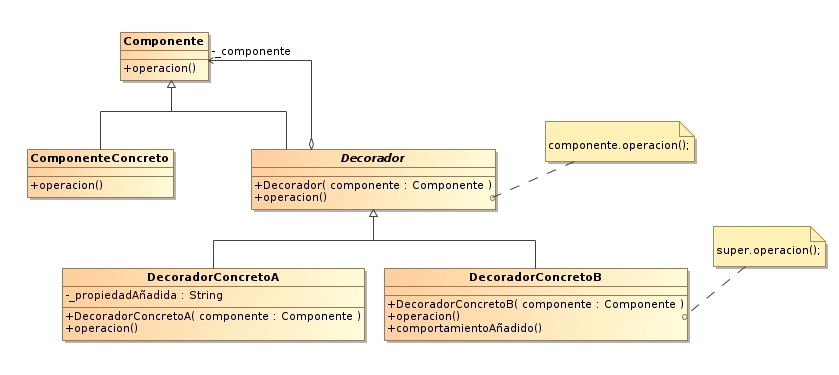

Decorator
El patrón Decorator responde a la necesidad de añadir dinámicamente funcionalidad a un Objeto. Esto nos permite no tener que crear sucesivas clases que hereden de la primera incorporando la nueva funcionalidad, sino otras que la implementan y se asocian a la primera.
Motivación
Un ejemplo para poder ver la aplicabilidad del patrón decorador podría ser el siguiente:
- Disponemos de una herramienta para crear interfaces gráficas, que permite añadir funcionalidades como bordes o barras de desplazamiento a cualquier componente de la interfaz.
- Una posible solución sería utilizar la herencia para extender las responsabilidades de la clase. Si optamos por esta solución, estaríamos haciendo un diseño inflexible (estático), ya que el cliente no puede controlar cuándo y cómo decorar el componente con esa propiedad.
- La solución está en encapsular dentro de otro objeto, llamado Decorador, las nuevas responsabilidades. El decorador redirige las peticiones al componente y, además, puede realizar acciones adicionales antes y después de la redirección. De este modo, se pueden añadir decoradores con cualidades añadidas recursivamente.
- En este diagrama de clases, podemos ver que la interfaz decorador implementa la interfaz del componente, redirigiendo todos los métodos al componente visual que encapsula.
- Las subclases decoradoras refinan los métodos del componente, añadiendo responsabilidades.
- También se puede ver que el cliente no necesita hacer distinción entre los componentes visuales decorados y los sin decorar.
Aplicabilidad
- Añadir responsabilidades a objetos individuales de forma dinámica y transparente
- Responsabilidades de un objeto pueden ser retiradas
- Cuando la extensión mediante la herencia no es viable
- Hay una necesidad de extender la funcionalidad de una clase, pero no hay razones para extenderlo a través de la herencia.
- Existe la necesidad de extender dinámicamente la funcionalidad de un objeto y quizás quitar la funcionalidad extendida.
Esctuctura
Participantes
- ComponenteDefine la interfaz para los objetos que pueden tener responsabilidades añadidas.
- Componente concretoDefine un objeto al cual se le pueden agregar responsabilidades adicionales.
- DecoradorMantiene una referencia al componente asociado. Implementa la interfaz de la superclase Componente delegando en el componente asociado.
- Decorador concretoAñade responsabilidades al componente.
Colaboraciones
- El decorador redirige las peticiones al componente asociado.
- Opcionalmente puede realizar tareas adicionales antes y después de redirigir la petición.
Consecuencias
- Más flexible que la herencia. Al utilizar este patrón, se pueden añadir y eliminar responsabilidades en tiempo de ejecución. Además, evita la utilización de la herencia con muchas clases y también, en algunos casos, la herencia múltiple.
- Evita la aparición de clases con muchas responsabilidades en las clases superiores de la jerarquía. Este patrón nos permite ir incorporando de manera incremental responsabilidades.
- Genera gran cantidad de objetos pequeños. El uso de decoradores da como resultado sistemas formados por muchos objetos pequeños y parecidos.
- Puede haber problemas con la identidad de los objetos. Un decorador se comporta como un envoltorio transparente. Pero desde el punto de vista de la identidad de objetos, estos no son idénticos, por lo tanto no deberíamos apoyarnos en la identidad cuando estamos usando decoradores.
Implementacion
El patrón Decorator soluciona este problema de una manera mucho más sencilla y extensible.
Se crea a partir de Ventana la subclase abstracta VentanaDecorator y, heredando de ella, BordeDecorator y BotonDeAyudaDecorator. VentanaDecorator encapsula el comportamiento de Ventana y utiliza composición recursiva para que sea posible añadir tantas "capas" de Decorators como se desee. Podemos crear tantos Decorators como queramos heredando de VentanaDecorator.
Ejemplo Java
public abstract class Componente{
abstract public void operacion();
}
public class ComponenteConcreto extends Componente{
public void operacion(){
System.out.println("ComponenteConcreto.operacion()");
}
}
public abstract class Decorador extends Componente{
private Componente componente;
public Decorador(Componente componente){
this.componente = componente;
}
public void operacion(){
componente.operacion();
}
}
public class DecoradorConcretoA extends Decorador{
private String propiedadAñadida;
public DecoradorConcretoA(Componente componente){
super(componente);
}
public void operacion(){
super.operacion();
this.propiedadAñadida = "Nueva propiedad";
System.out.println("DecoradorConcretoA.operacion()");
}
}
public class DecoradorConcretoB extends Decorador{
public DecoradorConcretoB(Componente componente){
super(componente);
}
public void operacion(){
super.operacion();
comportamientoAñadido();
System.out.println("DecoradorConcretoB.operacion()");
}
public void comportamientoAñadido(){
System.out.println("Comportamiento B añadido");
}
}
public class Cliente{
public static void main(String[] args){
ComponenteConcreto c = new ComponenteConcreto();
DecoradorConcretoA d1 = new DecoradorConcretoA(c);
DecoradorConcretoB d2 = new DecoradorConcretoB(d1);
d2.operacion();//output: "ComponenteConcreto.operacion()\n DecoradorConcretoA.operacion()\n Comportamiento B añadido\n DecoradorConcretoB.operacion()"
}
}
Ejemplo Python
def establecer_costo_decorator(funcion):
def envoltorio1(instancia, costo):
funcion(instancia, costo)
return envoltorio1
def obtener_costo_decorator(costo_adicional):
def envoltorio1(funcion):
def envoltorio2(instancia):
return funcion(instancia) + costo_adicional
return envoltorio2
return envoltorio1
class Cafe(object):
@establecer_costo_decorator
def establecer_costo(self, costo):
self.costo = costo
@obtener_costo_decorator(0.5)
@obtener_costo_decorator(0.7)
@obtener_costo_decorator(0.2)
def obtener_costo(self):
return self.costo
cafe = Cafe()
cafe.establecer_costo(1.0)
print (cafe.obtener_costo()) # 2.4